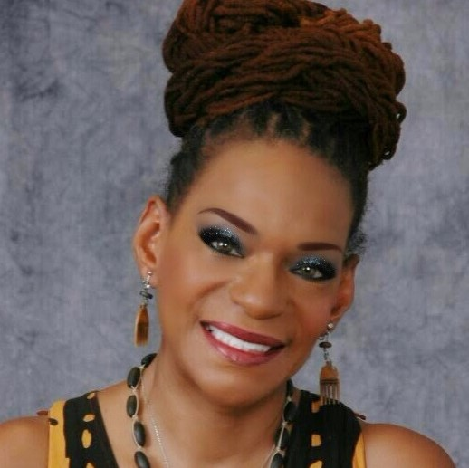

Let me Expoz-her
Jacqueline Denise “JD” Richards
JD has been in the hair care industry for 30 plus years. She is CEO of Expozure Salon & Training Institute based in Chattanooga, TN. She served as a senior Educator and Stylist for L’Oréal USA for 24 years. Under the brands of Soft-Sheen/Carson and Mazani, where she trained stylist both domestically and internationally. JD currently is VP of Mystique Natural products company for natural hair. She is also an inspirational speaker, author, and certified life purpose coach.
 Because of her interaction with women through various seminars, workshops and speaking engagements, JD is a woman that takes her Kingdom assignment seriously. She is passionate empowering women of all ages to take control of their lives, discover their purpose and expoze their God given dreams for the world to see.
JD founded ExpozurDreams in July 2017, which is a community of women who have made the decision to cultivate their "DreamSeeds"™ who are called "Proof Producers". She understands how easy it is for some women to drop their dreams and give their time and attention to their families. She knows how it feels to become discouraged by your past and allow it to dictate your future. And she sees how this thing called "Life" has a way of sucking the dreams right out of those who have fallen into the pseudo life cycle of work, home and repeat. With that said, her mission is to encourage you to ExpozurDreams.
"The best way to make your dreams come true is to work on somebody else’s."
Jim Raley
BNCouraged